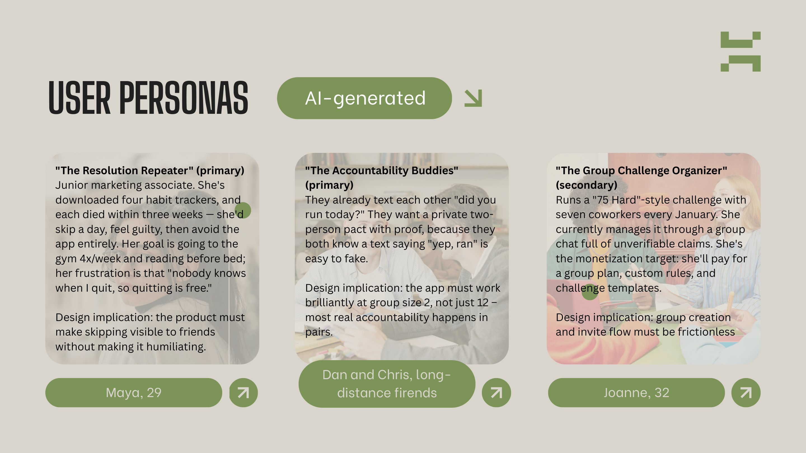
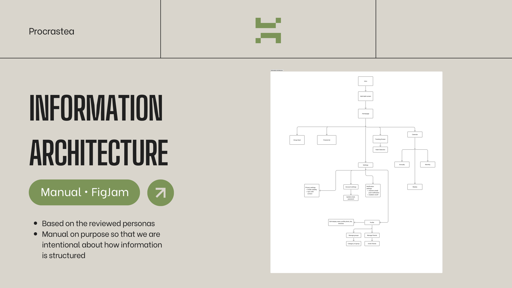
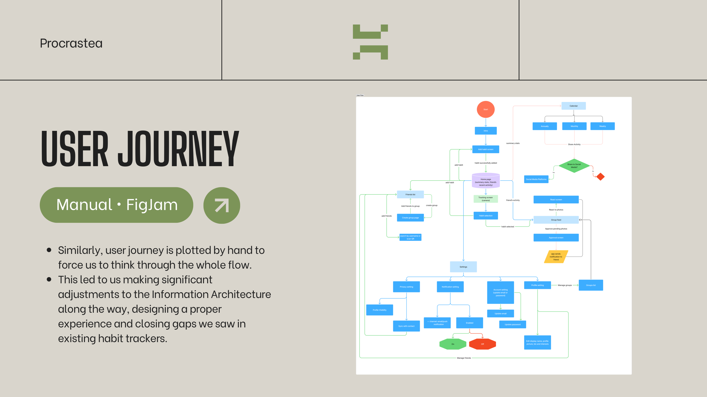

Procras
tea
Design process
Working draft
← Home
01
02
03
04

05

06

✍️
More slides on the way.
This is the deck so far — research synthesis, personas, IA & user flow, wireframes, branding and the prototype are still being added.
View the prototype →
Back to home